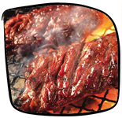
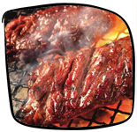

Can't get enough meat? Try one of these places to get your fill:
Meatballs, meatballs, and more meatballs! Choose your sides, sauces, and how you want your meatballs served. They also serve a killer ice cream sandwich. (And if you have vegetarian friends, they can try the veggie balls.) Pick me!
 

Meats grilled to perfection, Japanese barbecue style. Watch the meats cook in front of you until you can't take wait any longer, and relish in the juicy perfection. Once you've devoured your meat you can use the grill to make s'mores! Pick me!

If Japanese isn't your style, try some Korean barbecue. Cook the meats in front of you, then wrap them up in a lettuce leaf with an assortment of toppings and pickled veggies. Pick me!


To some, this is the best burger in New York. The fries and shakes are not too shabby as well. (If you're coming with a vegetarian, there's also the shroom burger.) Pick me!
Organic, grass-fed burgers and all-natural locally-sourced cheeses. What's not to love? Pick me!